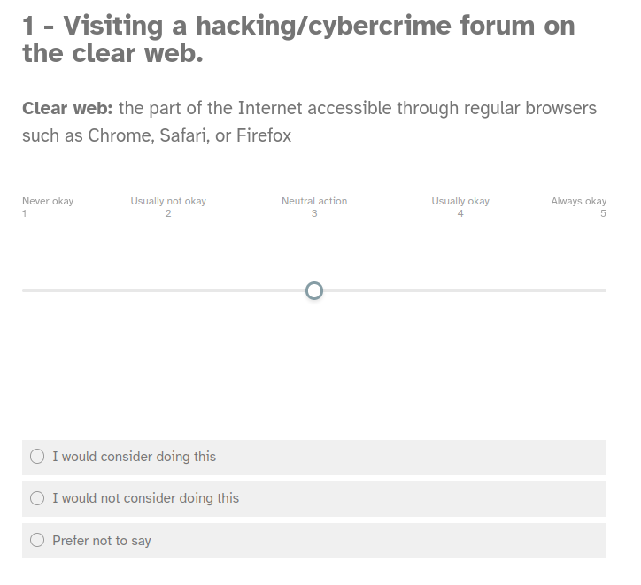
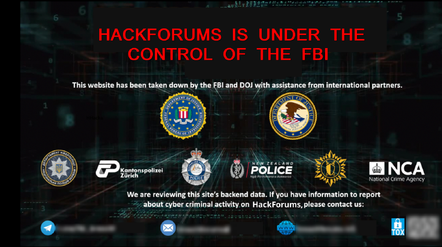
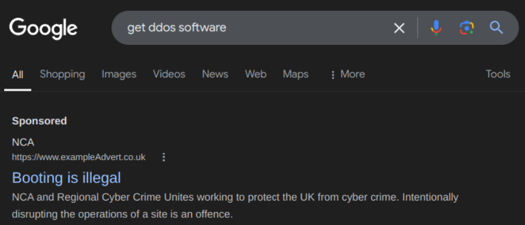
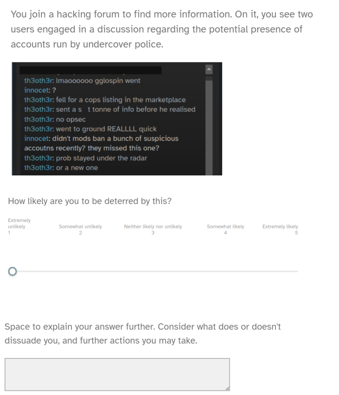
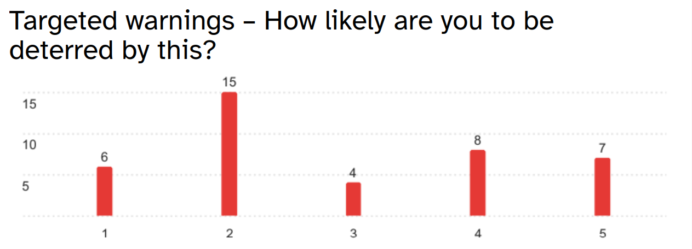
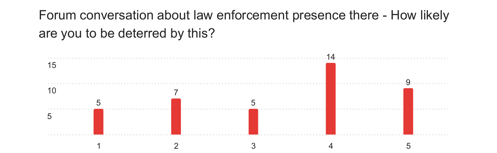
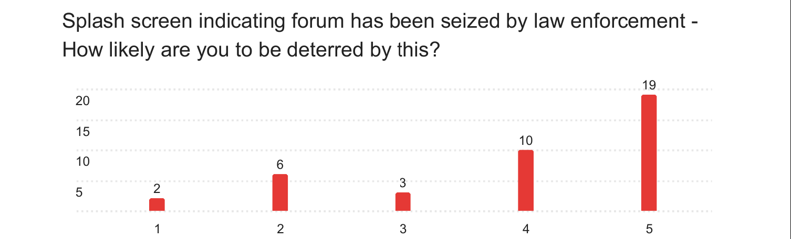

Deterring activity on hacking forums: Here's one I made earlier
Apparently I'm really good at imitating how cybercriminals talk
That's right: it's the fabled second part of my series on hacking forums, the topic I wrote my undergraduate
dissertation on! If you haven't read the first half yet, find it here.
Now, I've been calling it a dissertation, but that's not technically true. What I did was a project,
the difference being the fact that the university expected me to Do Something, not just write an essay. Enter
this article! We'll talk about what I did, why I did it, and the results and conclusions we can draw from it.
I'll also link to the fake hacking forum I created as part of this section for you to look around yourself.
What did I do?
I wanted to research the effectiveness of three specific deterrence techniques for myself:- Targeted warnings
- Degrading trust
- Seizing the website
To do this, I concocted a cunning scheme., split into two parts.
Survey
To begin with, I got 40 people to fill out an online survey for me. This was entirely anonymous, with a mixture of open-ended and closed questions. It was again split into two parts. First was the “attitudes” section. Based on where I shared the survey link, I predicted most of the sample population would be university students (more on this later), and wanted to assess what their attitudes were towards several actions on a scale from “never okay” to “always okay”. Some of these actions were undeniably illegal - such as accessing data on a computer system without permission or disrupting the operations of an online service - whilst others were not - including visiting a hacking forum on either the clear web or the dark web. From here, I wanted to judge how familiar my participants were with hacking forums and related activities, to better predict how accurate on a wider scale the rest of their answers were.
This leads us to the second part: effectiveness. I showed the participants screenshots representing each of the three techniques I was investigating:
 
Then, quite simply, they were asked how likely they would be deterred if they'd seen it in real life, on a scale of 1, “extremely unlikely”, to 5, “extremely likely”. The aim here was to get some numerical data, where a higher score meant a given deterrence technique was probably better at its job.

That being said, the most interesting replies came from the open text box at the bottom, where participants were no longer limited to just clicking a number and could actually expand on their answers further.
Interviews and a hacking forum
The second part of my process was to get even more opinions. As it happened, I only got four, because trying to get university computer science students to do anything in-person is a task doomed to failure from the outset.If you remember the second technique I wanted to investigate - degrading trust on hacking forums - you may be thinking that it seems quite vague and difficult to convey through a screenshot on a survey. To look further at it, then, I decided to make my own hacking forum and invite participants to navigate through it. They were asked to narrate aloud their thoughts about the various characters they encountered and what information they would use when interacting with the forum and why.
If you want to have a look yourself, the site is available here. Many of the usernames are references, oblique or otherwise, and typically references to media I enjoy. This is because making up a forum-full of fake people is hard work.
Why did I do it?
The three techniques I chose had all shown some promise in the real world, but I wanted to know more about how people reacted to them, not just read percentages on a screen (ironically, I'm about to continue the cycle. Read my percentages or else).Through the survey, I hoped to gain a mix of qualitative and quantitative data: numbers telling me which technique the greatest number of people thought had the greatest effect, and words telling me what they thought when faced with it.
The other thing the survey allowed me to do was judge how well acquainted the participants were with cybercrime and hacking forums. It's a reasonable prediction to say that someone who would never even download the Tor browser of their own volition is much easier to stop from visiting a hacking forum compared to those who go there frequently. The university wouldn't let me ask people to implicate themselves in crime, so instead I made the attitudes section. Then, for example, if most of the answers stated that visiting a hacking forum, or acquiring malware for any purpose including educational, was never okay, I could assume that the results probably wouldn't be the most accurate, and vice versa.
Through the interviews around my fake forum, I hoped to learn about what information users took note of when visiting and interacting with a hacking forum, and specifically how they used this experience to decide who - if anyone - to trust. A concept presented to a participant through a screenshot on an online survey may create a sense of distance between them and the action: it's much easier to say you wouldn't be affected by something with this removal. However, the participant's answer may be different when a similar discussion is held in-person and they are actively engaged in using the website.
Did I learn anything?
As a reminder, the three deterrence techniques I was investigating were:- Targeted warnings
- Degrading trust
- Seizing the website
On a scale where 1 represented “extremely unlikely to be deterred” and 5 “extremely likely”, targeted warnings were seen to be the least effective, with a mean rating of 2.88. Several participants noted that, if they already knew their actions were illegal, being told as much would have no effect on them. This isn't far off how these warnings are implemented in real life: targeting young people and newcomers to cybercrime before they get more involved.
Skipping ahead to the third technique, seizing websites had a mean rating of 3.95, which is the highest of the three. Multiple participants did note that their reactions would depend on how much data from the forum law enforcement were able to access. One also pointed out that it may just work to drive users of the forums further underground, rather than stopping their activity.
Numerically, the success of degrading trust in hacking forums lies between these two other techniques, with a mean rating of 3.38. However, the effect of this technique became much more pronounced in the data gathered from the interviews. Each participant brought up how, with the threat of law enforcement presence on the site, they would assess their levels of investment in it and, as such, their levels of danger. Whilst a couple said that they would likely continue using the hacking forum so long as it held use, others said that they would immediately assume any products or services offered would be honeypots.
Another common idea brought up by the participants was “It's a matter of when, not if.” When participants believed a hacking forum to be compromised, they suggested that it would only be a matter of time before further law enforcement action. This had knock-on effects on the wider forum landscape: whilst participants noted they could simply move to some other site, there was no guarantee that that would be any more secure than the last place.
  
How accurate are these results?
In terms of sample size: the ideal number of participants for qualitative studies, like my interviews, is sometimes given as 9-17. If you'll recall, I was only about to get four. However, three of the participants were knowledgeable in cybersecurity, and two of them had experience monitoring hacking forums. Whilst it would've been nice to gather more data, what I did get through these interviews was of a high quality.But what about the survey?
40 people replying to an online survey is a fairly alright number, though one on the smaller size (most sources give 30 or below as the minimum ideal participant number). To assess how much these people knew about hacking forums, I used the attitudes section, the full results of which are in the dropdown box at the bottom of this subsection.
Fewer people indicated that they would access a hacking forum on the dark web rather than the clear web, with more stating it was never or rarely okay. This suggests a number of participants unfamiliar with what the dark web actually is, or how several major hacking forums operate identically on both. Nine participants answering that acquiring malware with no intent to use it is never or rarely okay also suggests a lack of familiarity with cybercrime laws. It's reasonable to assume that these people would be uneasy to begin with at the thought of accessing hacking forums, and so would be easy to deter. This would mean their judgements on how effective different techniques are would be biased towards "more effective".
That all being said, these people turned out to be a minority. Some 70% of respondents said that accessing hacking forums on the clear web was a neutral or okay action, and 55% said the same for those forums on the dark web. The opinions of these participants are likely more representative, as they have demonstrated more familiarity with cybercrime and hacking forums, and may have spent time on these sites. These aren't definite statements - once again, the university frowned on my attempts to get people to implicate themselves in crime - but I'd say they're reasonable conclusions to draw.
From all this, we can assume my results are reasonably accurate in describing how effectively different proposed techniques can deter activity on hacking forums, but with a bias towards overestimating this effectiveness.
> Click here to see the graphs
Concluding thoughts
Not taking into account the effort required to implement any of these, the deterrence techniques that seem to have the biggest effect are the ones that make very visible the presence of law enforcement, whether that's through big actions like taking down sites or more covert operations.And… well, I don't know. What if we just used the mind probe?